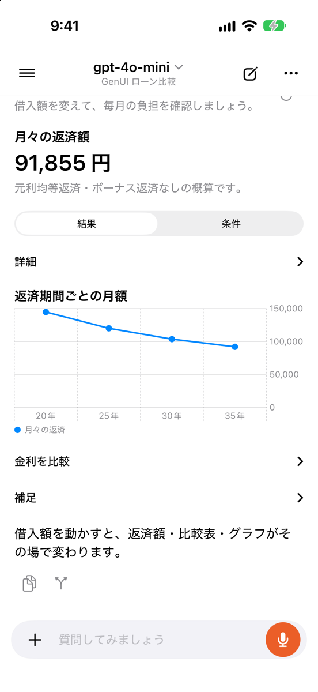
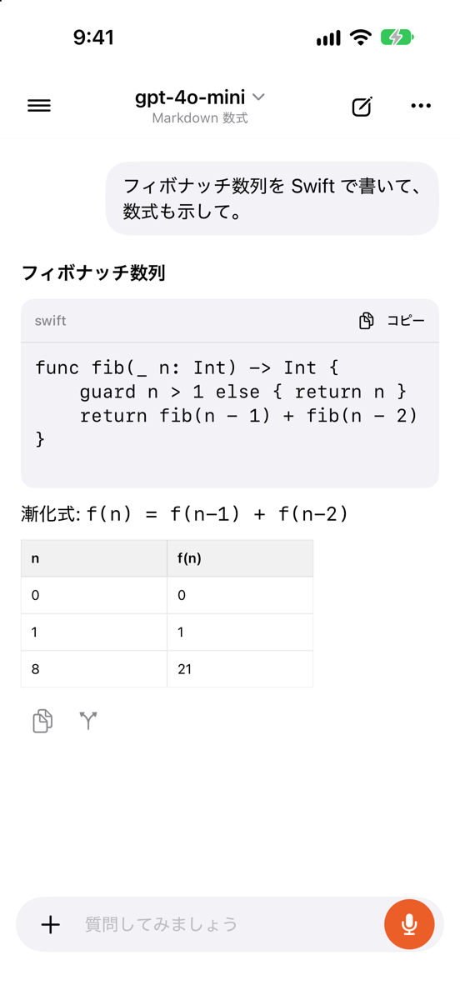
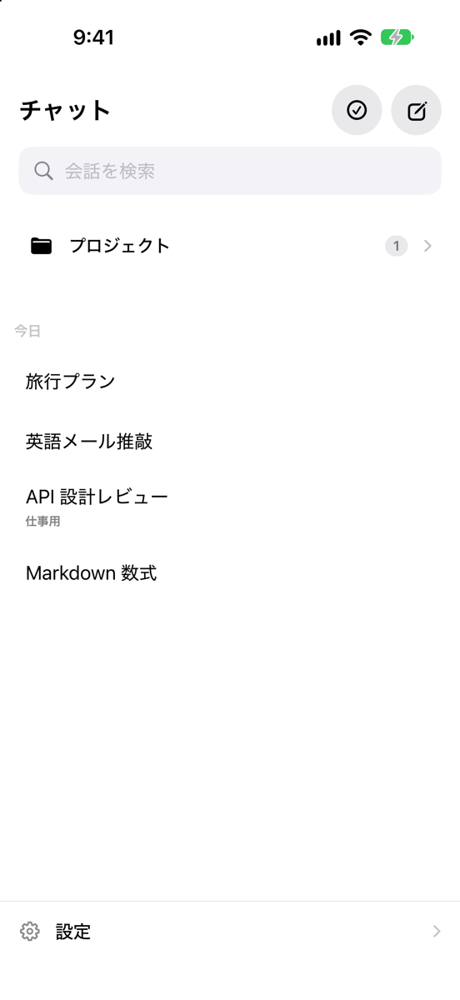
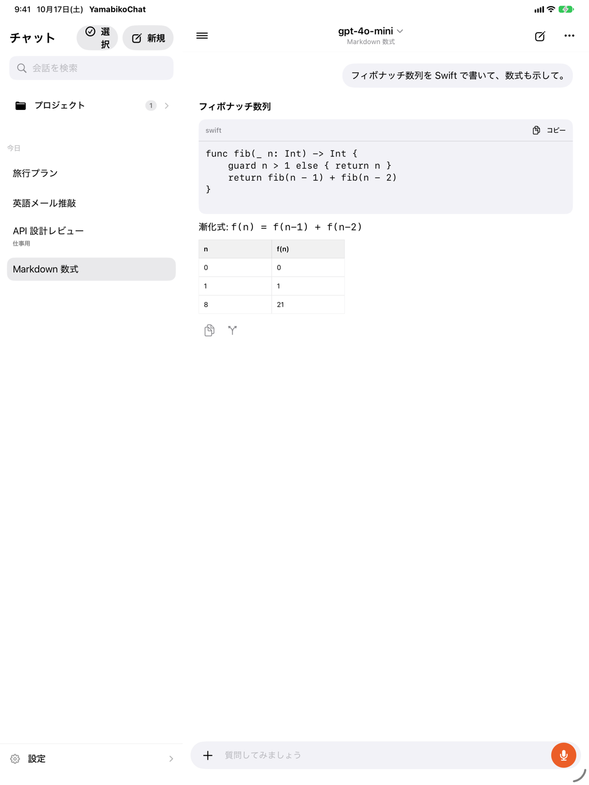

ひとつのモデルと話す
Markdown、コード、数式、画像添付に対応した、落ち着いて使えるAIチャット。
A MULTI-MODEL CHAT STUDIO
答えをひとつのモデルに任せきりにしない。複数のAIを並べて比べ、対話させ、いくつもの視点から考えを深めるチャットアプリです。
アプリは無料。AIプロバイダーの利用料金は各サービスの契約に従います。



THINK FROM MORE THAN ONE ANGLE
ひとつの質問から、比較・対話・統合まで。いつものチャットを越えた使い方を。
Markdown、コード、数式、画像添付に対応した、落ち着いて使えるAIチャット。
同じ質問を2つのモデルへ。同時に届く回答を並べて見比べられます。
テーマとターン数を決めて、異なるモデルの視点が広がる様子を見届けます。
複数モデルの回答をパネル・判定・合成の流れで整理し、結論へまとめます。
ENGLISH
Compare two models side by side, let them talk through a topic, or bring several perspectives together. YamabikoChat is a native AI chat app for iPhone and iPad. Connect your own provider accounts and send each prompt to the service you choose.
MADE FOR YOUR WORKFLOW
チャットだけでなく、会話の整理や視覚的な回答まで。手元のデバイスに、使い慣れた作業空間を。

APIキーや対応アカウントを登録して、利用するAIを自分で選べます。
チャット履歴と設定は端末に保存。プロンプトは選んだ接続先へ送られます。
アプリ内でAIの利用枠やサブスクリプションを販売しません。
YamabikoChatをApp Storeからダウンロード。